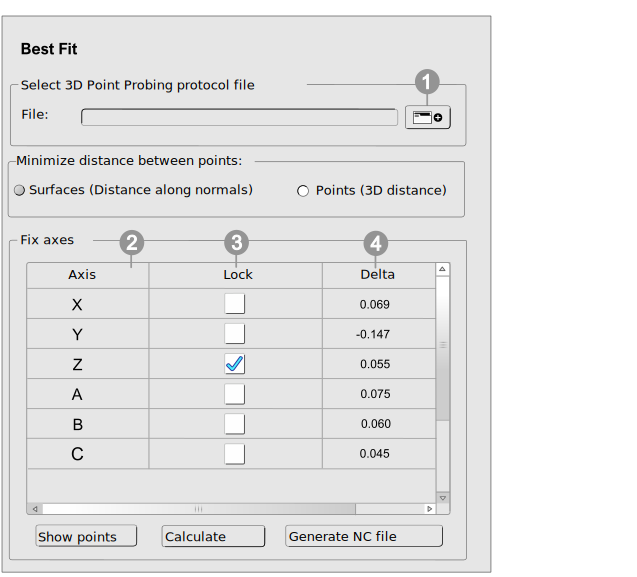

4.3. Best Fit - determine real part position
Note
More complex part shapes, alternative manufacturing processes (casting, 3D printing, forged stock) and smaller allowances make manually aligning the part very time-consuming. The hyperMILL Best Fit alignment eliminates the need for time-consuming manual alignment measures. Positioning is automatic and based on the internal origin shift captured using the 3D Point Probing cycle. Probing takes place both in the CAM programming and on the machine, so that the position deviation between the virtual and the real situation can be determined and corrected. The Best Fit real part position is adjusted in the VIRTUAL Machining Center and is checked for collisions. An attempt is made to comply with all machine limits with the help of the NC optimizer.
Positioning with Best Fit at a glance
Note
With a Heidenhain machine and license for the CONNECTED Machining, the probing protocol can be read in and read back conveniently via a file exchange dialog.
|  |
 Select the probing protocol file that was generated by hyperMILL in
Select the probing protocol file that was generated by hyperMILL in *.ompr or *.txt format with the
3D Point probing cycle.
If the VIRTUAL Machining Center is connected to a Heidenhain controller, the protocol file can be transferred directly as follows:
-
In the File exchange dialog, click the Copy and Select file button to copy the probing protocol file [
probe.ompr] and select for the Best Fit function or -
click the Select file button to use a probing protocol file from the computer of the VIRTUAL Machining Center.
For information on connecting VIRTUAL Machining Center and the machine, see section Connecting VIRTUAL Machining Center and the machine.
Minimize distance between points
To align the component optimally on the machine, minimize the distance between the model positions and the real positions on the machine. The distance can be minimized with the function Surfaces (distance along normals) along the surface normals of the component. To be used for relatively uniform allowances.
 Axes of the origin table reference.
Axes of the origin table reference.
 Lock the axes that are not to be moved when calculating the optimal clamping position on the machine. To do this, click the field for the required axis under Lock.
Lock the axes that are not to be moved when calculating the optimal clamping position on the machine. To do this, click the field for the required axis under Lock.
 Delta: Shift values of the axes of the origin table reference.
Delta: Shift values of the axes of the origin table reference.
Show points / Remove points: Show or hide the probing points.
Calculate: The best position of the part origin is calculated based on the information in the probing protocol.
Generate NC file: Generate an NC file for all machining jobs based on the newly calculated Best Fit-coordinate system.
Note
No changes may be made to the origin definition in the machine control while the Best Fit function is executed. The adjusted toolpaths are checked for collisions.